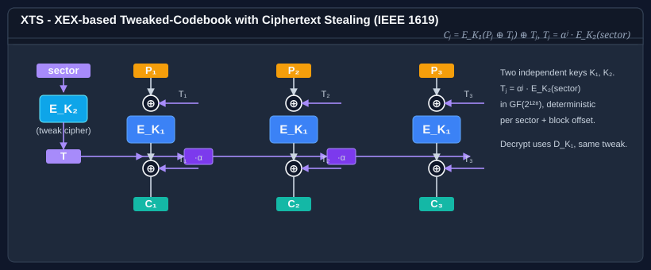

XtsModeTransform Class
Definition
- Namespace
- Bodu.Security.Cryptography
- Assembly
- Bodu.Security.Cryptography.dll
- Package
- Bodu.Security.Cryptography 1.3.0
- Source
- XtsModeTransform.cs
Applies XEX-based Tweaked CodeBook mode with ciphertext Stealing (XTS) to an underlying pair of IBlockCipher instances, per IEEE Std 1619-2007 / NIST SP 800-38E.
public sealed class XtsModeTransform : IBlockCipherModeTransform, IDisposable- Inheritance
-
XtsModeTransform
- Implements
- Inherited Members
- Extension Methods
Examples
using System.Security.Cryptography;
using Bodu.Security.Cryptography;
// XTS uses two independent keys - Key1 for data, Key2 for the tweak. Never share keys.
using IBlockCipher data = new AesBlockCipher(key1);
using IBlockCipher tweak = new AesBlockCipher(key2);
byte[] sectorNumber = BitConverter.GetBytes((long)42); // little-endian sector number, padded to block size
Array.Resize(ref sectorNumber, data.BlockSize / 8);
IBlockCipherModeTransform xts = new XtsModeTransform(data, tweak, sectorNumber);
byte[] ciphertext = new byte[plaintext.Length];
int written = xts.Transform(plaintext, ciphertext, encrypt: true);Remarks

XTS requires two independent ciphers keyed with different material:
-
dataCipher(Key₁) - encrypts or decrypts the data. Shown as E_K₁ in the central column of the diagram. -
tweakCipher(Key₂) - encrypts the sector number (tweak). Shown as E_K₂ on the left.
Using the same key for both reduces XTS to a single-key construction and weakens security. Because IBlockCipher exposes no key material, this type cannot detect Key₁ == Key₂; ensuring the two ciphers are independently keyed is the caller's responsibility.
Implementation scope. This transform implements the XEX core for whole 128-bit blocks and does not perform ciphertext stealing: input whose length is not a multiple of the block size is rejected rather than stolen, so it is not interoperable with IEEE 1619 data units that end on a partial block. The GF(2128) tweak reduction is defined only for 128-bit blocks, so both ciphers must have a 128-bit block size - the constructor rejects any other width.
For each 128-bit block j in a sector, the XEX construction is:
T_j = α^j ⊗ tweakCipher.Encrypt(tweak) // Galois field multiplication
C_j = dataCipher.Encrypt(P_j ⊕ T_j) ⊕ T_j // encrypt
P_j = dataCipher.Decrypt(C_j ⊕ T_j) ⊕ T_j // decryptThe horizontal tweak bus in the diagram corresponds to this successive ·α multiplication: each ·α box
doubles the tweak in GF(2¹²⁸) so the Tⱼ arriving at cell j is αʲ times the base tweak. The two XOR nodes
inside each cell - before and after the data cipher - realize the ⊕ T_j pairs in the equation above.
GF(2^128) multiplication uses the primitive polynomial x^128 + x^7 + x^2 + x + 1 with little-endian bit representation (byte 0, bit 0 = coefficient of x^0), identical to IEEE 1619.
When to use XTS. The standard mode for sector-level disk encryption - used by BitLocker, FileVault, dm-crypt/LUKS, VeraCrypt, and the IEEE 1619 disk-encryption specification. XTS is designed specifically for the random-access, fixed-size-block setting where ciphertext expansion is impossible (the on-disk sector size cannot grow), which means it provides confidentiality but no authentication. Do not use XTS for protecting messages over untrusted channels - pick an AEAD mode (GcmModeTransform, EaxModeTransform) for that. For new disk encryption designs that can afford a per-sector tag, AEAD-based alternatives (Adiantum, AES-XTS-HMAC, or storage-specific AEAD modes) provide stronger guarantees.
Constructors
XtsModeTransform(IBlockCipher, IBlockCipher, byte[])
Initializes a new instance of the XtsModeTransform class.
public XtsModeTransform(IBlockCipher dataCipher, IBlockCipher tweakCipher, byte[] tweak)Parameters
dataCipherIBlockCipherThe cipher keyed with Key₁, used to encrypt or decrypt data blocks.
tweakCipherIBlockCipherThe cipher keyed with Key₂, used to encrypt the sector number. Must have the same block size as
dataCipher.tweakbyte[]The sector number encoded as a block-size byte array in little-endian order. A defensive copy is taken.
Exceptions
- ArgumentNullException
Any argument is null.
- ArgumentException
Block sizes differ, or
tweaklength does not equal the block size.
Methods
Dispose()
Releases the resources used by this instance and zeroes the retained tweak so that key-equivalent state does not linger in memory after disposal. The underlying data and tweak IBlockCipher instances are not disposed by this type - ownership remains with the caller.
public void Dispose()Remarks
Idempotent.
Transform(ReadOnlySpan<byte>, Span<byte>, bool)
Transforms input under the mode's chaining strategy and writes the result to
output.
public int Transform(ReadOnlySpan<byte> input, Span<byte> output, bool encrypt)Parameters
inputReadOnlySpan<byte>The input data to transform. Its length must be a positive multiple of the underlying cipher block size.
outputSpan<byte>The destination span. Its length must be greater than or equal to the length of
input.encryptbool
Returns
- int
The number of bytes written to
output.
Remarks
The tweaks for a run of up to 4 KiB are computed first, then the run is XORed with them, encrypted or decrypted
with one multi-block call, and XORed with them again; the output is identical to transforming a block at a time.
output may be the same memory as input. The tweak and scratch buffers
are cleared before the call returns.
Exceptions
- ArgumentException
Thrown when
input's length is not a multiple of the block size or whenoutputis too small.
Applies to
| Product | Versions |
|---|---|
| .NET | 8, 10 |